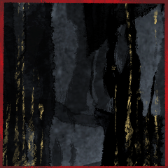

GM
では少しずつ情報が出回り始め、メインフェイズ第二サイクル最終シーン。
GM
◆メインフェイズ第二サイクル第四シーン
シーンプレイヤー：爾甁粢 野葛
爾甁粢 野葛
とりあえず、簡単な独白シーン後に百々坂さんに追い付いて話をしようかな。
シーン表は追い付いてからでも大丈夫です？ それとも先に振るべきでしょうか
GM
今回はシーン表にフレーバーの補助程度の意味しかないので。
爾甁粢 野葛
では、先に簡単にモコモコした後に振ってみることにします。
爾甁粢 野葛
――比良坂の女が去り行きて、すぐ後のこと。
今や周囲に気配はなく、静寂の中。
この場に長居をする理由は最早ない筈であったが。
爾甁粢 野葛
今しがたの目前で生じた出来事。
その有り様を思い返し、足を止める。
爾甁粢 野葛
――何かが、釈然としない。
さながら飛ぶように、迷いなく駆けて来たあの足取り。
いかなる罠が巡らせてるとも分からぬ中を、
まるで勝手知ったるが如きに構わず駆けあがって来た。
爾甁粢 野葛
無論、この地は比良坂の用意した箱庭。
多少の罠も潜る自信はあるだろう。それでも。
あそこまで畏れず、躊躇わず。
無闇やたらと駆けて来られるだろうか。
爾甁粢 野葛
そう考えたが故に、その後を追い駆けた。
獲物を追うのは狩人の得手。
踏み締めた跡を辿り、その背を求めて追い縋り。
百々坂 瞠
それは追いすがられていると見れば跳躍し、再び、あの時のように木の上へ。
振り向くその頬に、確かに『八十神』の刻んだ矢傷。
百々坂 瞠
その奥。
器に刻まれた微かなひびから、もはや隠し切れぬ巨大ななにものかの気配。
爾甁粢 野葛
「……『神器』が、人の形を取るとはな。
俺はあの場で、お前を計り知ることは出来なかったということだ。」
爾甁粢 野葛
つがえた矢を、樹上へ油断なく向ける。
相対する2者の光景は、先刻と変わりはなく。
百々坂 瞠
「むしろこの場で見抜いていることに恐れ入るよ、当代の『八十神』よ。
私自身でさえ、この場に至るまで計り知るなどできなかったことだ」
爾甁粢 野葛
「……知り得た理由を、教える積もりはない。
お前は、この儀式の要となる存在だ。
お前が『八千矛』へ渡ることが、儀式を終焉へ導くことになる。」
百々坂 瞠
「此度は我々の虚言をまで盗み取ったか？ 堅洲の勇者よ。
その志は評価しよう」
爾甁粢 野葛
「……虚言を弄するのは、お前たちの役目だろう。」
爾甁粢 野葛
「そもそもを言うならば、この儀式こそが虚ろなのだ。
抵抗を認めるなどと嘯きながら、その実は全てがお前たちの術中だ。」
爾甁粢 野葛
「……この儀式には致命の陥穽が存在する。
現に…我らの里から儀式に臨んだ先祖たちは、その全てが敗北を喫して来た。
幾千年もの昔から、まるで定められて来たかの如く。
力を誇り知恵を振るう選りすぐりの英傑たちは、見るも無惨に己の身だけを血の中に沈めて来たのだ。」
爾甁粢 野葛
「この儀式には必敗の仕掛けが組み込まれている。
『八千矛』に『神器』が渡れば、どうあがこうと『八十神』はお前たちには勝てない。」
爾甁粢 野葛
「それこそが、この儀式の正体なのだろう？
比良坂の異物――いや、『神器』の化身よ。」
百々坂 瞠
「まったく、やはり貴殿は実によく喋るな、八十神よ。
次代もこうであれば、次からは演目に朗誦を追加してもいい」
百々坂 瞠
「比良坂機関は国守の忍び。
その我々が、万が一にも国滅の可能性を残しておくとでも？」
爾甁粢 野葛
「…多弁の理由を少しは考えたらどうだ？
俺は今…お前への殺意に暴れ出しかねぬ昂りを、口から吐き出すことで抑えている。
安い挑発は、ただ破滅を招き入れることになるぞ。」
百々坂 瞠
「ならば、この場で私を射てみるがいいさ。簡単なことだよ」
百々坂 瞠
「野放しの神器。
未だ持ち主なき業物。
我々の策謀を打ち破り得るもの」
爾甁粢 野葛
「今この時においては…お前の存在こそが。
俺にとり、最も破壊するべき存在だ。
そのことに、何らの変わりはないが………」
爾甁粢 野葛
「…お前は言ったな？
『目的など、来た時に決めた』と。」
爾甁粢 野葛
「俺であろうと…かの『姫君』が居ようと構う所では無かったと。」
爾甁粢 野葛
「……『神器』が、俺に何の用向きを持つ？
かの『姫君』ならいざ知らず……だ。」
爾甁粢 野葛
「それを聞くために、俺は未だ弓を放たずにいるのだ。」
百々坂 瞠
「これはこれは。
我々は実に信用されていないな。あの場で話すべきはすべて話したというのに」
百々坂 瞠
「その言葉がなければ、私の方が聞き返していたところだ。
わざわざこの場まで私を追いかけてきた用向きをな」
爾甁粢 野葛
「…卑しくも、謀と罠を知悉する比良坂のことだ。
単なる慢心・弄びの一つと片付けることも出来た。」
爾甁粢 野葛
「だが、お前は『神器』なのだ。
お前が己の役割に従うなら…俺と出会う必要は無い筈だ。」
百々坂 瞠
「そうだな。ではもう少し深く話をしようか。
といっても、行き着く先は同じだ。私のあの言葉に嘘はない」
百々坂 瞠
「当初は確かに、私が探していたのは『姫君』だよ。
だがこの場にいないとなれば、もはや答えは一つだ」
百々坂 瞠
「貴殿にも告げた通り、あの子はその場に留めようとして留められるような子ではない。
十分に知っているとも」
百々坂 瞠
「して。
貴殿はあの子を『暴れ馬』と称したな」
爾甁粢 野葛
「……率直な表現だ。
あの娘は……檻に入れておける気性ではない。」
百々坂 瞠
「それを思い知るに至る何かがあった、ということだろう？
その上でこの場にあの子がいないのなら、もはや私がどうする必要もない」
百々坂 瞠
「貴殿と私が出会ったのは完全なる偶然だが、もはや出会ったとして何をする理由もなかった。
そこで一つ、人柄でも見ていくかと思いついたんだよ。
あの場でな」
爾甁粢 野葛
「……ただ用が済んだことで解放しただけだ。
それ以上のことを、詳らかに明かす積もりはない。」
爾甁粢 野葛
「人柄などと、な。
関心も無い事を言うのは止めろ。
ただ殺すために飼う者の内面など、興味を抱く理由もある筈が無い。」
爾甁粢 野葛
「この矢が、お前を狙い続けていることを忘れるな。
俺は、お前のみが持つ企みを問うているのだ。」
百々坂 瞠
「腹を割いてみれば、美しい糸のひとつもあるかもしれん。
いずれ殺されゆくものだろうと」
百々坂 瞠
そう言って、真っすぐに自らを狙い澄ます鏃を見る。
百々坂 瞠
「貴殿に、『八十神』としてでもなく、堅洲のものとしてでもなく」
百々坂 瞠
「貴殿はその弓が自らを欺き、何かを謀ると思うか？
人の手にある道具というものが」
百々坂 瞠
「さて？
何だろうな。比良坂としてのものか、儀の部外者としてのものか、神器としてのものか」
爾甁粢 野葛
「……道具は、謀を用いない。
丹念な手入れにはその様に応え、怠れば手に握る者に因果を返す。
ありとあらゆる道具に、例外はない。」
爾甁粢 野葛
「…それが、神ならぬ者の手に依る道具であるならば。」
爾甁粢 野葛
「そして……神なる存在は、常に贄を求める。
『神器』よ、お前も、そうだと言うのか？
俺が答えを求めるのならば、貢ぐものを用意せよと。」
百々坂 瞠
「貴殿が知る五大流派の一。
謀の忍びは、只でその答をくれてやるようなものだったか」
爾甁粢 野葛
「……お前の作法に乗ってやる。
それが、我々の大事へと繋がるのならな。」
爾甁粢 野葛
人差し指を立て、口元へと寄せて。
ぼそりぼそりと、言葉を紡ぐ。
先祖の一人が残した憑依の諜報術。
その術理を、この場で真似て真実を読み取ろうと。
爾甁粢 野葛
情報判定をします。
憑依術で、琴梨さんの秘密を抜きます。
爾甁粢 野葛
2D6>=5 （判定：憑依術） (2D6>=5) ＞ 4[1,3] ＞ 4 ＞ 失敗
爾甁粢 野葛
ちょ、ちょっと悩みます ちょっとお待ちを
[ 爾甁粢 野葛 ] 忍具 : 2 → 1
爾甁粢 野葛
2D6>=5 （判定：憑依術） (2D6>=5) ＞ 11[5,6] ＞ 11 ＞ 成功
GM
おめでとうございます。では野葛さんに琴梨さんの秘密をお送りします。
GM
お送りしました。咀嚼が済みましたらRPの再開をお願いします。
爾甁粢 野葛
当然のこととして、純白の被り物に変化は見られず。
爾甁粢 野葛
「……哀れな、娘だ。」
小さな呟きが漏れるのみ。
百々坂 瞠
「…………？」微かに目をすがめて、その呟きを見下ろす。
爾甁粢 野葛
「……良いだろう。
『神器』よ、お前に供物を与える。
役割に則り、俺に恵みを寄越せ。」
爾甁粢 野葛
野葛の持つPC2の秘密と、百々坂さんの持つアレの秘密の交換を提案したく思います。
GM
アレの秘密は情報共有で琴梨さんにも渡りますね。
百々坂 瞠
「賢明な判断だ、『八十神』よ。
だが貴殿は、……もう既に辿り着いているさ。
先の答え、実に明快にして、真を突いたものだった」
百々坂 瞠
「ありとあらゆる道具に例外はない。
日用の道具、武具、そして肉体までも私はそう考えている」
爾甁粢 野葛
「…………」
下賜された『答』の一つを咀嚼し、飲み込み。
百々坂 瞠
苦渋に歪むその手前。
先までの威勢を減じて、どこか力なく。
爾甁粢 野葛
「…この里に鬼が棲まうというなら……
それは、お前たちのことだ。比良坂め。」
百々坂 瞠
その笑い声も、先のそれにはほど遠く。
どこか絞り出したような気配。
爾甁粢 野葛
「……気が削がれた。
今は見逃してやる。何処へでも去ると良い。」
爾甁粢 野葛
「いずれにしろ……
すぐにまた、相見えることになるのだからな。」
百々坂 瞠
「……今ばかりは礼を言おう。
お陰で行くところができたばかりだ」
百々坂 瞠
言うが否か、何処かへと跳ぶ。
先までの力なき様子とは打って変わって、その一足だけは矢の如く。
爾甁粢 野葛
その様を見て取るか、或いは見ずか。
隠鬼の姿も、風の如く失せて。
闇と静寂だけが、その場に残された。
GM
手繰り寄せたその先に、果たして何が繋がるものか。
GM
◆メインフェイズ第三サイクル第一シーン
シーンプレイヤー：百々坂 瞠
百々坂 瞠
かくして矢の如くに『八十神』の下より放たれる、黒影ひとつ。
百々坂 瞠
向かう先は迷いなく一筋、その様もまた一矢に似て、
軌跡もまた、奇しくも先の火矢を追うが如く。
月光の下、祭壇へと至る。
百々坂 瞠
革靴が石段を叩く硬質な音。
その主が顔を上げれば、見覚えのない紅、一つ。
三榊 琴梨
はっと、気配の方に顔を遣る。
目を大きく見開いた。
三榊 琴梨
ぱたぱたと、駆け寄る。
大した怪我ではなさそうだが、この状況下、何も油断はできなかった。
百々坂 瞠
「やはり戻っていたか。
この八千矛殿の元だ、万が一にも傷つけられるなどとは思わなかったが」
百々坂 瞠
駆け寄ってくるその様をじっと見て、こちらからも一歩だけを踏み出す。
近づけば近づくほど、感じ取れるのは巨大な気配。
葦原 名張
「そりゃどうも。もっとも、ハナから無傷で帰ってきてたがな」
三榊 琴梨
不意に、足を止める。
彼女から、以前までは感じられなかったその気配。
ああ、本当に――
三榊 琴梨
ちら、と『八千矛』を見る。
自分が感じ取れるのであれば、きっと彼も。
百々坂 瞠
止まるその足に、いささか予想外の顔を見せた後。
頬に刻まれた微かな凹凸を指先がなぞる。
葦原 名張
「ああ、そうだ。そう、百々坂サンが隠してた……ってのも変だな。その『神器』のことは、全員が知るところになってんだ」
葦原 名張
「これだけの忍がそろってりゃ、小さな綻びから気付くだろ？」
百々坂 瞠
「やはりか。『八十神』もまた感づいていた」
百々坂 瞠
「……だが、私は本当に何も知らなかったさ。
知らないものを述べられはしない。
あの場で述べたことは嘘ではないよ、『八千矛』よ」
百々坂 瞠
「それに、貴殿ほどの忍びであれば。
この夜のうちに気づくだろうとは思っていた」
葦原 名張
「それくらいはわかってるよ。ありゃ俺の聞き方が悪かった」
三榊 琴梨
「……お姉さまは、そんな大事なことを隠すようなひとではありません」
三榊 琴梨
きっぱりと。
瞠が言うよりも、それは強く。
葦原 名張
それこそ俺を試す意図の方が大きかっただろう。
百々坂 瞠
ほんの数分、いくらかの空間を隔てただけで。
こんなに直ぐな信を向けるものがある。
葦原 名張
「おっと、もちろん百々坂サンが嘘を言ってたわけじゃないのは認めるぜ」
三榊 琴梨
「わたくし、『八千矛』様もみだりに人を疑うようなお方だとは思っておりません」
三榊 琴梨
「でも、主張しておきたかったのです。
お姉さまはそんなひとではない、と」
三榊 琴梨
「いいえ、お姉さま。琴梨は当然のことを申し上げたまでです」
葦原 名張
両手を小さく上げて降参のジェスチャー。
三榊 琴梨
「……な、何かおかしいことを言いましたか」
葦原 名張
「いやぁ、なに、気にすることじゃあない」
百々坂 瞠
「何もおかしくはないさ。おかしくないからこそ、そういう顔をすることもある」
葦原 名張
「そういうこった。百々坂サンはお見通しだねぇ」
百々坂 瞠
「いいや？ 私にもまた、見通せない……できていないことはあるさ」
三榊 琴梨
「……『八千矛』様。琴梨は『姫君』なのですから、ご弟妹と同じように思われては困ります」
三榊 琴梨
拗ねたように顔を背けるのは、きっとその弟妹と変わらない仕草であった。
瞠の言うことには、素直に、「そうですか」と頷くのだけれども。
百々坂 瞠
そう述べて。
愛らしい妹分の仕草を目に留めて後、視線は『八千矛』へ向き直る。
葦原 名張
「ああ、ちょうど俺も『姫サマ』も、ミステリーの謎解きみたいにわからないことがあってね」
葦原 名張
向けられる視線を合わせ、わずかに目を細める。
三榊 琴梨
見通せないこと。できていないこと。
瞠のその言葉に顔を上げたが、かち合う二人の視線に口を噤む。
百々坂 瞠
「状況は同じということか。
私もまたそうだ。理解したいことはあれ、あまりにピースが足りていない」
三榊 琴梨
瞠の言う通り。
『八千矛』――否、『葦原 名張』のことは、まだ何も分かっていないに等しい。
面持ちが、僅かに固くなる。
百々坂 瞠
「して、状況が分かったとしても……
此度の『八十神』は手練れだ。おそらくは、思う以上に」
百々坂 瞠
神器が神器たることを示した綻び。
一目でわかるその傷を刻んだ相手など、ただ一人でしか有り得ない。
葦原 名張
「そうだな。そもそもここに飛んだ時に、あの格好で真っ先に姿を消せる時点で相当な使い手だろ？」
三榊 琴梨
「……わたくしが言うのも何ですけれど。
地の利があるとはいえ、お二人に気づかれずわたくしを拐かしたこと。その点も、見逃せませんわね」
百々坂 瞠
「その通り。
それでいて、矢術も相当なものだ。私の術が及ばないほどに」
葦原 名張
「なるほど。そりゃ骨が折れそうだ。負けてやるつもりはこれっぽちもねぇが、そりゃ向こうも同じか」
百々坂 瞠
琴梨のその驚愕ももっともだ。それを最も実感したのは、他ならぬ自分。
葦原 名張
「ましてやここは『八十神』の地元だしな」
百々坂 瞠
「……『八千矛』よ。ひとつ貴殿を試させてほしい。
この場でかの技を最も知るのは、二度相対した私だ」
三榊 琴梨
最も身近な者の、手練れの術が効かなかった、という事実に表情がいっとう険しくなる。
百々坂 瞠
「私から一本を取るだけで構わない。
葦原の序列第一位の技、こちらも本気で受けるわけにはいかないさ。
それに、余計な消耗をさせるわけにもいかない」
百々坂 瞠
祭壇のうち、空間のある方へ歩み出る。
手で静かに、琴梨へ下がるよう促す。
三榊 琴梨
「……お二人とも、お怪我の無いようにしてくださいませね」
自分が言うまでもなくそうなるのだろうけれど、つい、心配が口を衝く。
それから、大人しく下がった。
葦原 名張
地と履物が音を鳴らす。
双眸は目前の使い手を射貫くように向けられている。
葦原 名張
手合わせと言えど、自分が試される側だ。
百々坂 瞠
たおやかな声に微か、口元を緩める。
静かにその声に頷いて、
百々坂 瞠
その存在が意識から消える。
己を射抜く目を、静かに睨み返す。
百々坂 瞠
先んじて地を蹴るはこちら。
前傾姿勢から、腰元へ手刀を一太刀。
百々坂 瞠
情報判定を行います。
目標は名張さんの【秘密】、特技は骨法術。
百々坂 瞠
2D6>=5 （判定：骨法術） (2D6>=5) ＞ 12[6,6] ＞ 12 ＞ スペシャル(【生命力】1点か変調一つを回復)
葦原 名張
鋭い踏み込みと手刀。
それに対して柳のように滑らかな動きで力の向きを変える。
葦原 名張
大きな体と大きな手足。それに対して繊細で流麗な、無駄のない動き。
葦原 名張
しかして、その視線は手刀の手先ではなく、相対する使い手の全身を見据えている。

葦原 名張
いなしたと同時、添えた手から流れるように手刀を返す。
百々坂 瞠
流れる力に一切を逆らわずして方向だけを変える、骨法を知り尽くしたその動きに、感嘆する暇もない。
百々坂 瞠
こちらの技もまた、この場に至って更に冴え冴えと。
これもまた目覚めつつあるものの断片か、そんな思考は埒外。
その技さえも届かぬというなら。次の動きを巡らすは、頭より体が先んじて。
百々坂 瞠
変えられた力の流れに逆らわずして、その場で方向だけを変え。
その動きのまま足にて一撃、
その動作が成される前に、
己のものでない手刀が背を突く。
百々坂 瞠
途端、動きがぴたりと止まった。
至近であれば寸止めと呼ばれる動作を、それよりもずっと早く。
百々坂 瞠
「……流石は『八千矛』を務める勇士。
試すなどと言った方が驕っていたか」
葦原 名張
「……いやいや、大した使い手だ。危うく手合わせってことを忘れるところだった」
三榊 琴梨
呼吸をするのも忘れる程、二人の忍びの冴え渡る動きに見入っていたが、やがてほうと息を吐いた。
百々坂 瞠
改めて体勢を整え、先まで技を交わし合っていた相手へ再び向いて。
百々坂 瞠
「改めて。
……貴殿に伝えるべきことがある、『八千矛』」
百々坂 瞠
「解かれる謎にはいつも、痛みが伴う。
ミステリーとは多くがそういうものだ」
百々坂 瞠
「しかし貴殿ならば耐えられよう。
改めて、そう思うに至ったよ」
葦原 名張
「謎として存在するのであれば、それは解かれるべきものでもあらぁな」
葦原 名張
「そして、それに応えるのも、また役目だ」
百々坂 瞠
「……貴殿のその大器に、いまいちど、頼らせてくれ」
百々坂 瞠
こちらから：PC2の秘密
名張さんから：PC2の例のものの秘密 で交換を申し込みます。
GM
琴梨の秘密→例のものの秘密で順番に公開していきましょう。
GM
【秘密：三榊 琴梨】
あなたはその身に神器を宿して生まれてきた。八千矛はあなたの神器の封印を解くものであり、そしてそれはすなわちあなたを娶る定めにある者だ。あなたは儀式『神楽八十神追』が国守の儀式であると共に、婚姻の儀式だと教わってきた。しきたりにより八千矛を一目見ることさえ許されていなかったが、その宿命を受け入れている。もとよりそれを受け入れなければ、封印されたままの神器があなたを殺すことを知っているからだ。
あなたはプライズ『神器』を持つ。
クライマックスフェイズ開始時まで神器が封印されていた場合、あなたは即座に死亡し、神器は消滅する。
あなたの本当の使命は『神器の封印を解いてもらうこと』だ。
GM
【秘密：生大刀】
このプライズ『神器』の本当の名前は神器『生大刀』だ。
このプライズは封印されているかぎり、戦果で奪うことはできない。
このプライズの封印が解かれたとき、このプライズが封印されていた者の使命は封印を解いた者の使命に書き換えられる。その際、このプライズが封印されていた者は、所持するすべての感情属性を再度決定し直す。
このプライズを所持（封印されている状態を除く）しているものは、クライマックスフェイズ、毎ラウンドに一度、神通丸として使用できる。（使用してもこのプライズはなくならない）
GM
>クライマックスフェイズ開始時まで神器が封印されていた場合、あなたは即座に死亡し、神器は消滅する。
補足ですが、こちらに関しましてはPC4にも適用されます。
GM
では木曜日は休み、再開は金曜日の11/4の21時ですね。
瞠さんの手番からの再開になります。
なにか問題がありましたらお気軽にご連絡くださいませ。